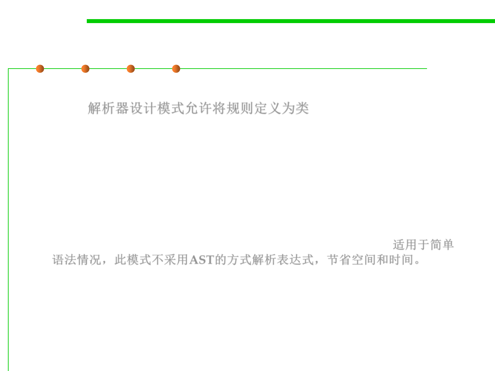

Interpreter Pattern
6.3 Maintainability-Oriented Construction Techniques
▪ The Interpreter Design Pattern allows you to build the rules as
classes. 解析器设计模式允许将规则定义为类
▪ Intent
– Given a language, define a representation for its grammar along with an
interpreter that uses the representation to interpret sentences in the
language.
▪ Applicability
– The grammar is simple. They can interpret expressions without building
abstract syntax trees, which can save space and possibly time. 适用于简单
语法情况，此模式不采用AST的方式解析表达式，节省空间和时间。
– Efficiency is not a critical concern. The most efficient interpreters are
usually not implemented by interpreting parse trees directly but by first
translating them into another form. But even then, the translator can be
implemented by the Interpreter pattern, so the pattern is still applicable.